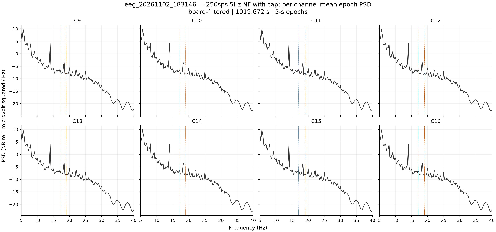
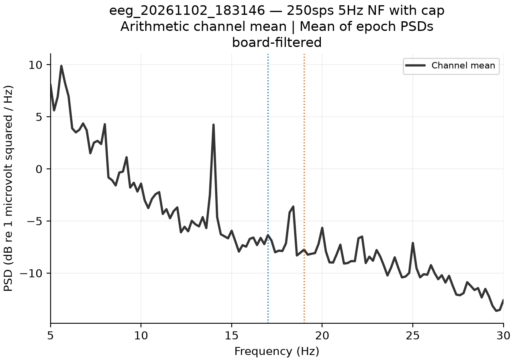
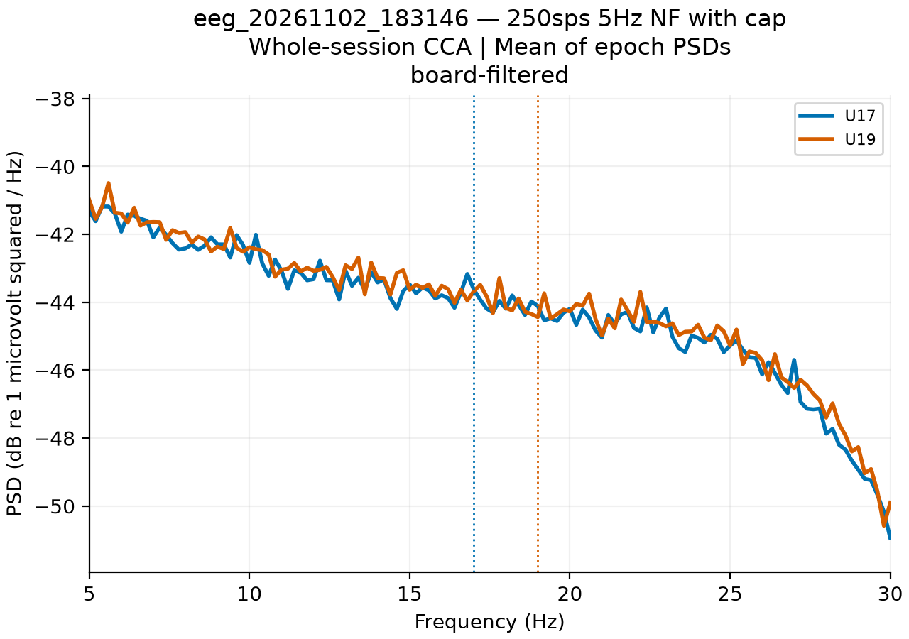
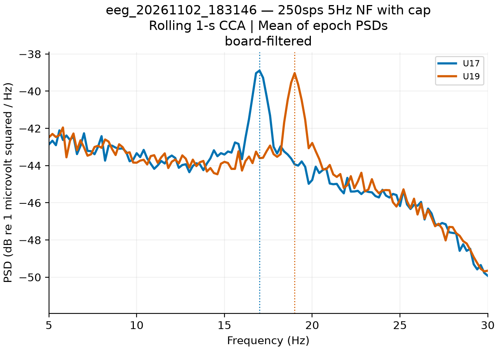
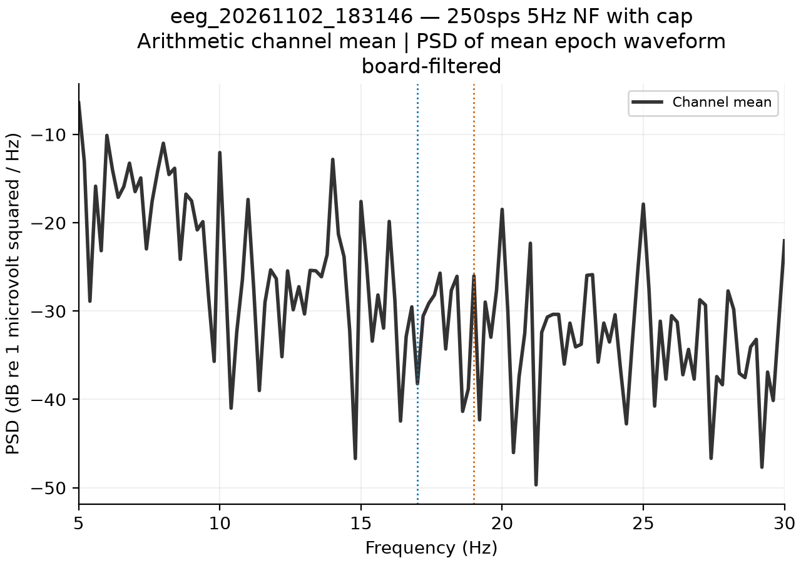
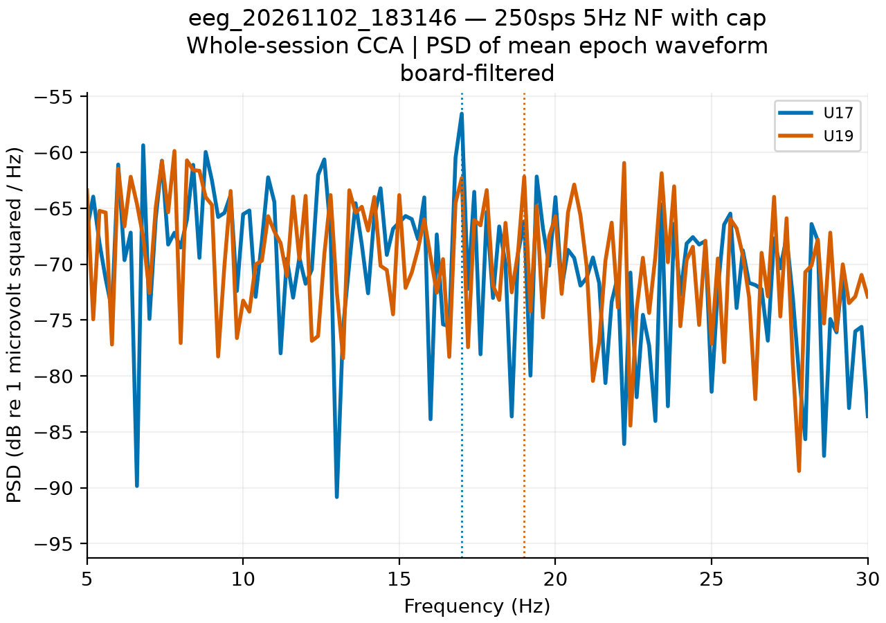
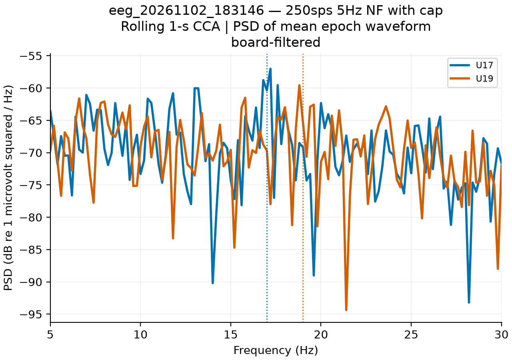

One continuous with cap session analysed. Five-second epochs, DPSS NW=1/K=1. No game/condition labels; 17/19 Hz are inherited analysis targets. This session contains recorded board-filtered signals. Rolling CCA is an offline reconstruction with explicit boundary fits. All samples retained.
| session | label | source | samples | observed_seconds | logged_cca_updates |
|---|---|---|---|---|---|
| eeg_20261102_183146 | 250sps 5Hz NF with cap | board-filtered | 254918 | 1019.672 | 5098 |

board-filtered. All samples retained. 203 complete + 1 partial epochs. Mean epoch PSD in linear power, each channel separately. DPSS NW=1/K=1; 0.2 Hz FFT grid. Dotted blue/orange: 17/19 Hz analysis targets.
SVG| Channel mean | Whole-session CCA | Rolling CCA |
|---|---|---|
 board-filtered; channels: C9, C10, C11, C12, C13, C14, C15, C16. Mean of selected channels before epoching. PSD per epoch, then equal epoch mean in linear power. 203 complete + 1 partial 5-s epochs; 254918 samples, all retained. DPSS NW=1/K=1; 0.2 Hz FFT grid. 17/19 Hz are inherited targets, not verified stimuli. SVG |  board-filtered; channels: C9, C10, C11, C12, C13, C14, C15, C16. Independent target weights fitted once using the whole session. PSD per epoch, then equal epoch mean in linear power. 203 complete + 1 partial 5-s epochs; 254918 samples, all retained. DPSS NW=1/K=1; 0.2 Hz FFT grid. 17/19 Hz are inherited targets, not verified stimuli. SVG |  board-filtered; channels: C9, C10, C11, C12, C13, C14, C15, C16. Latest 1-s windows; logged CCA endpoints + offline boundary endpoints. First window back-projected; offline analysis. PSD per epoch, then equal epoch mean in linear power. 203 complete + 1 partial 5-s epochs; 254918 samples, all retained. DPSS NW=1/K=1; 0.2 Hz FFT grid. 17/19 Hz are inherited targets, not verified stimuli. SVG |
 board-filtered; channels: C9, C10, C11, C12, C13, C14, C15, C16. Mean of selected channels before epoching. NaN-aware mean epoch waveform, then PSD. No event alignment. 203 complete + 1 partial 5-s epochs; 254918 samples, all retained. DPSS NW=1/K=1; 0.2 Hz FFT grid. 17/19 Hz are inherited targets, not verified stimuli. SVG |  board-filtered; channels: C9, C10, C11, C12, C13, C14, C15, C16. Independent target weights fitted once using the whole session. NaN-aware mean epoch waveform, then PSD. No event alignment. 203 complete + 1 partial 5-s epochs; 254918 samples, all retained. DPSS NW=1/K=1; 0.2 Hz FFT grid. 17/19 Hz are inherited targets, not verified stimuli. SVG |  board-filtered; channels: C9, C10, C11, C12, C13, C14, C15, C16. Latest 1-s windows; logged CCA endpoints + offline boundary endpoints. First window back-projected; offline analysis. NaN-aware mean epoch waveform, then PSD. No event alignment. 203 complete + 1 partial 5-s epochs; 254918 samples, all retained. DPSS NW=1/K=1; 0.2 Hz FFT grid. 17/19 Hz are inherited targets, not verified stimuli. SVG |